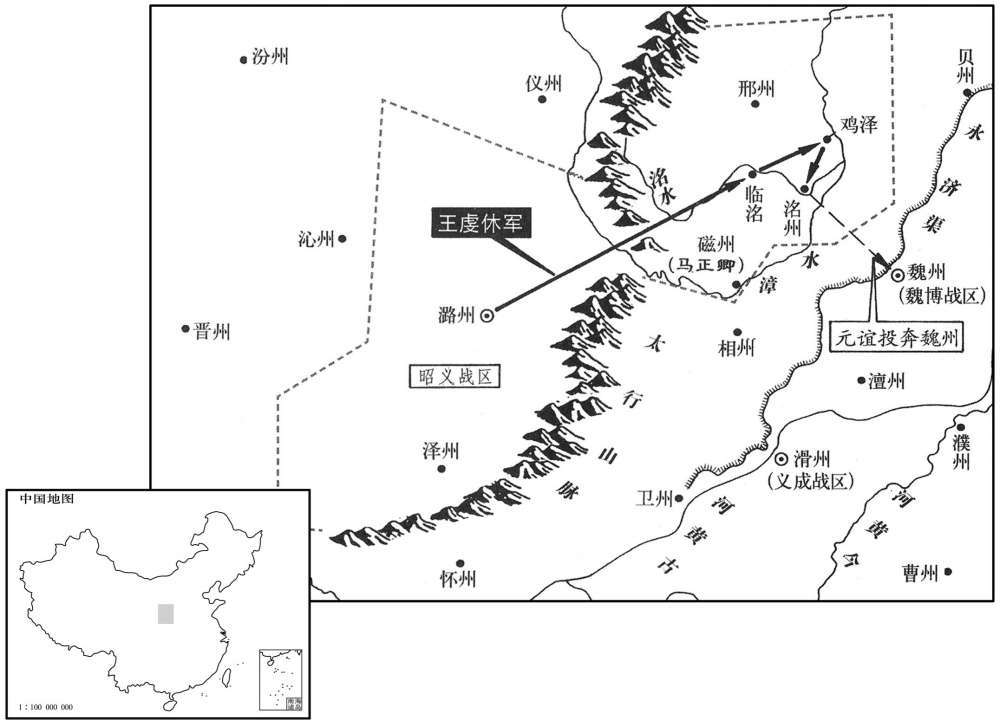

公元794年资治通鉴：本年记事、原文与白话对照
按原书编年位置阅读；追叙和史论不等于本年发生的事件。白话采用所据译本，缺译不以生成译文补齐。
卷234 · 本年记事
公元794年 · 唐德宗神武圣文皇帝贞十年
十年〔（甲戍、七九四）〕
本年记事分属相邻卷，按原书顺序分别保留：第234卷 · 第235卷。
本年事件索引（现代整理）

本年形势与背景参考图
春，正月，剑南、西山羌、蛮二万余户来降；诏加韦皋押近界羌、蛮及西山八国使。〔八国，即前女王、哥邻等。弱水最弱小，不得预八国数。〕
春季，正月，剑南、西山一带的羌人、蛮人二万多户前来归降。德宗颁诏加封韦皋为押近界羌、蛮及西山八国使。
崔佐时至云南所都羊苴俹城，〔蜀注：苴，徐嗟翻。俹，弥嗟翻。详见前。考异曰：旧传作「阳苴俹城」，今从新传。〕吐蕃使者数百人先在其国，云南王异牟寻尚不欲吐蕃知之，令佐时衣牂柯服而入。〔衣，于既翻。牂柯蛮，在昆明东九百里，东距辰州二千四百里，其南千五百里即交州。衣，于既翻；下同。〕佐时不可，曰：「我大唐使者，岂得衣小夷之服﹗」异牟寻不得巳，夜迎之。佐时大宣诏书，〔大声以宣诏书。〕异牟寻恐惧，顾左右失色；业巳归唐，〔事巳成为业。〕乃歔欷流涕，俯伏受诏。〔歔，音虚。欷，许既翻，又音希。〕郑回密见佐时教之，〔郑回劝异牟归唐事见二百三十二卷三年。〕故佐时尽得其情，因劝异牟寻悉斩吐蕃使者，去吐蕃所立之号，献其金印，〔去，羌吕翻。吐蕃给云南金印，见二百十一十卷玄宗天宝十载。〕复南诏旧名；异牟寻皆从之。〔考异曰：旧韦皋传：「四年正月，皋遣判官崔佐时至苴俹城。」按西南夷状：「四年，皋微闻异牟寻之意，始因诸蛮万书于牟寻。自是比年招谕，至九年，牟寻始遣使分皋书以来。朝廷赐之诏书，皋乃遣佐时赍诏以往。牟寻犹欲使佐时易服而入。」皋传误也。〕仍刻金契以献。异牟寻帅其子寻梦凑等与佐时盟于点苍山神祠。〔帅，读曰率。〕
崔佐时来到云南的都城羊苴城，几百名吐蕃使者原先便在云南国中。云南王异牟寻还不打算让吐蕃知道自己已经归附唐朝，便让崔佐时穿着柯人的服装进入羊苴城。崔佐时认为不恰当，他说：“我是大唐朝廷的使者，怎么能穿著小小夷人的衣服呢！”异牟寻没有办法，只好在夜晚迎接他。崔佐时大声宣读诏书，异牟寻害怕，他望着周围的人们，连脸色都改变了。然而，已经归顺唐朝，只好抽抽咽咽地流着眼泪，趴在地上接受诏旨。郑回暗中去见崔佐时，教给他如何去做。所以崔佐时完全了解了其中的情由，因而劝说异牟寻悉数斩杀吐蕃使者，除去吐蕃封立的名号，献出吐蕃给予的金印，恢复南诏原来的名称，异牟寻完全听从了这些建议，还刻成金质的契约献给崔佐时。异牟寻带邻他的儿子寻梦凑等人与崔佐时在点苍山神祠会盟。
先是，吐蕃与回鹘争北庭，大战，死伤甚众，〔争北庭事见上卷五年、六年。悉荐翻。〕征兵万人于云南。异牟寻辞以国小，请发三千人，吐蕃少人；〔以为少也。少，诗绍翻。〕益至五千，乃许之。异牟寻遣五千人前行，自将数万人踵其后，昼夜兼行，袭击吐蕃，战于神川，大破之，取铁桥等十六城，〔铁桥，在施蛮东南。据新书：是战也，异牟寻破施、顺二蛮，并虏其王，置白崖城。又据新志：自戎州开边县南行，至白崖城，三千里而近。南诏传曰：南诏居永昌、姚州之间，铁桥之南。将，即亮翻；下同。〕虏其五王，降其众十余万。戊戌，遣使来献捷。〔降，户江翻。使，疏吏翻。〕
在此之前，吐蕃与回鹘争夺北庭，发生激战，死亡与负伤的人很多，便向去南征调兵员一万人。异牟寻借口国家微小，请求派兵三千人，吐蕃嫌少，云南将兵员增加到五千人，吐蕃才答应下来。异牟寻派遣五千人在前面行进，自己却率领好几万人跟随在他们后边，日夜兼程，前去袭击吐蕃。云南吐蕃在神川交战，大破吐蕃，占领了铁桥等十六座城，俘虏了吐蕃的五个王，降服吐蕃人众十余万。戊戌（二十四日），云南派遣使者前来进献捷报。
瀛州刺史刘澭为兄济所逼，〔济、澭不协事始上卷八年。〕请西扞陇坻，〔坻，丁礼翻。〕遂将部兵千五百人、男女万余口诣京师，号令严整，在道无一人敢取人鸡犬者。上嘉之，二月，丙午，以为秦州刺史、陇右经略军使，理普润。〔理，治也。以普润为治所。〕军中不击柝，不设音乐。士卒病者，澭亲视之，死者哭之。
瀛州刺史刘被哥哥刘济所逼迫，便请求到西边去保卫陇坻地区。于是，他带领部下士兵一千五百人以及男女家眷一万余口前往京城。由于号令严明整肃，沿途没有一个人强取百姓的鸡狗，德宗很是嘉许他。二月，丙午（初三），德宗任命刘为秦州刺史、陇右经略军使，以普润为治所。刘不让人敲打着木梆在军中巡夜，也不设置音乐。士兵病了，刘亲自去看望他们；士兵死了，刘亲自去哀哭他们。
乙丑，义成节度使李融薨。丁卯，以华州刺史李复为义成节度使。复，齐物之子也。〔李齐物，淮安王神通之孙。〕复辟河南尉洛阳卢坦为判官。监军薛盈珍数侵军政，〔数，所角翻。〕坦每据理以拒之。盈珍常曰：「卢侍御所言公，我固不违也。」〔坦后卒能脱于盈珍之谮。侍御，坦之寄禄官，所谓宪衔也。〕
乙丑（二十二日），义成节度使李融去世。丁卯（二十四日），德宗任命华州刺史李复为义成节度使。李复是李齐物的儿子。李复征召河南县尉洛阳人卢坦担任判官， 由于监军薛盈珍屡次干扰军中政事，卢坦往往依据理法反对他。薛盈珍经常说：“卢侍御讲的话都是为公家着想，我当然不能够违背他。”
横海节度使程怀直入朝，厚赐遣归。
横海节度使程怀直入京朝见，德宗给与优厚的赏赐，然后打发他回去。
夏，四月，庚午，宣武军乱，留后李万荣讨平之。先是宣武亲兵三百人素骄横，〔先，悉荐翻。横，户孟翻。〕万荣恶之，〔恶，乌路翻。〕遣诣京西防秋；亲兵怨之。大将韩惟清、张彦琳诱亲兵作乱，攻万荣；万荣击破之。亲兵掠而溃，多奔宋州，宋州刺史刘逸准厚抚之。〔史言李万荣不能制刘逸准。〕惟清奔郑州，彦琳奔东都。万荣悉诛乱者妻子数千人。有军士数人呼于市曰：〔呼，火故翻。〕「今夕兵大至，城当破。」万荣收斩之，奏称刘士宁所为。五月，庚子，徙士宁于郴州。〔郴，丑林翻。〕
夏季，四月，庚午（二十八日），宣武军发生变乱，留后李万荣讨伐并平定了变乱。在此之前，由于宣武军的亲兵三百人素来骄矜专横，李万荣憎恶他们，便派遣他们到京城西面防御吐蕃，亲兵都怨恨他。大将韩惟清、张彦琳诱使亲兵发起变乱，进攻李万荣，李万荣击败了他们。亲兵边掳掠，边溃退，多数逃奔宋州，宋州刺史刘逸准优厚地安抚他们。韩惟清逃奔郑州，张彦琳逃奔东都洛阳。李万荣悉数诛杀了作乱将士的妻子儿女几千人。有几个军士在街市中大声呼喊说：“今天晚上，部队大规模开来，汴州城就会被攻破。”李万荣收捕斩杀了他们，还上奏声称这是刘士宁所做的事情。五月，庚子（二十八日），朝廷将刘士宁迁移到郴州。
钦州蛮酋黄少卿反，围州城，〔少卿者，西原黄洞蛮酋也。酋，慈由翻。〕邕管经略使孙公器奏请发岭南兵救之；〔上元后置邕管经略使，领邕、贵、党、横等州。〕上不许，遣中使谕解之。
钦州蛮人的酋长黄少卿造反，包围了州城，邕管经略使孙公器上奏请求征调岭南军队前去救援，德宗不肯允许，派遣中使宣旨劝解他们。
陆贽上：「言郊礼赦下巳近半年，而窜谪者尚未沾恩。」乃为三状拟进。上使谓之曰：「故事，左降官准赦量移，〔史照曰：移，徙也，谓得罪远谪者，遇赦则量徙近地。〕不过三于百里，今所拟稍似超越，又多近兵马及当路州县，〔当路州县，谓其地当入京之路者。近，其斩翻。〕事恐非便。」贽复上言，〔复，扶又翻；下同。〕以为：「王者待人以诚，有责怒而无猜嫌，有惩沮而无怨忌。斥远以儆其不恪，〔远，于愿翻。〕甄恕以勉其自新；〔甄，稽延翻，察也，免也。〕不儆则浸及威刑，不勉而复加黜削，虽屡进退，俱非爱憎。行法乃暂使左迁，念材而渐加进叙，又知复用，谁不增修!何忧乎乱常，何患乎蓄憾!如或以其贬黜，便谓奸凶，恒处防闲之中，〔处，昌吕翻。〕长从摈弃之例，则是悔过者无由自补，蕴才者终不见伸。凡人之情，穷则思变，含凄贪乱，或起于兹。〔凄，悲也，痛也。〕今若所移不过三五百里，则有疆域不离于本道，风土反恶于旧州，〔离，力智翻。风土之同道而独甚恶者，如广府统广、韶、端、康、封、冈、新、乐、泷、窦、义、雷、春、高、循、潮等州，春、循、新瘴气特重于诸州是也。〕徒有徙家之劳，实增移配之扰。又，当今郡府，多有军兵，所在封疆，少无馆驿，示人疑虑，体又非弘。乞更赐裁审。」
陆贽进言说：“自从圜丘祭天，大赦天下的赦令颁下，已经将近半年，但是，贬官流放的人们还没有得到大赦的恩典。”于是他写成三个状书，进呈上来。德宗让人告诉他说：“根据惯例，对降职的官员可以依照赦令酌情迁移到近处来，但不能超过三五百里地。现在，你拟定的迁官办法似乎稍微超过了规定，安置的地点又往往接近军队驻地，或者是处于进京路线上的州县，此事恐怕不够妥当。”陆贽再次进言认为：“君王要以诚意对待众人，可以责备臣下，对他们发怒，但不能够猜疑他们；可以惩处臣下败坏事功的行为，但不能够怨恨他们。将臣下斥逐远方，是为了警告他们没有恭谨听命；甄别并宽恕臣下的过失，是为了劝勉他们重新做人。不加警告，就会使臣下逐渐触犯刑法；不加劝勉，只会使臣下再遭贬黜。虽然君王屡次进用或罢黜臣下，但完全不是出于个人的好恶。执行法规，这是让臣下暂时降职，以后顾念臣下的才能，便又逐渐地加以提拔任用，臣下知道自己还能够再次被起用，有谁还不加强自身的修养呢！又何必为打乱常规变乱而发愁，为留下遗憾而担心呢！如果因臣下被降职免官，便认为他们是奸邪凶恶的，永远将他们置于防备与禁阻之中，使他们长期废免，不得任用，这便是让悔改的人无法自行弥补过失，使蕴含着才华的人终究不能施展抱负。大凡人之常情，穷困潦倒，就希望变革；身境痛苦，便图谋作乱，或许就是产生于此。如果现在迁移被贬的官员不超过三五百里地，便会发生仍然没有离开原先被贬去的州道，而风土人情反而比原来更为恶劣的情况，空有迁徙家室的劳顿，实际上是增加了迁徙流亡的骚扰。此外，现在的郡府，往往驻扎着军队，而州境之内，驿站的房舍是很少或者没有的。既让人们感到疑虑，于国体也不够宽宏。请陛下再予以斟酌审核吧。”
上性猜忌，不委任臣下，官无大小，必自选而用之，宰相进拟，少所称可；〔称，尺证翻。称，惬也；下同。少，诗沼翻。〕及群臣一有谴责，往往终身不复收用；好以辩给取人，〔好，呼到翻；下同。〕不得敦实之士；艰于进用，群材滞淹。贽上奏谏，其略曰：「夫登进以懋庸，〔懋，勉也。庸，功也。〕黜退以惩过，二者迭用，理如循环。进而有过则示惩，惩而改修则复进，既不废法，亦无弃人，虽纤介必惩而用材不匮；故能使黜退者克励以求复，登进者警饬而恪居，〔恪居，谓恪居官次也。〕上无滞疑，下无蓄怨。」又曰：「明主不以辞尽人，不以意选士，如或好善而不择所用，悦言而不验所行，进退随爱憎之情，离合系异同之趣，是由舍绳墨而意裁曲直，弃权衡而手揣重轻，虽甚精微，不能无谬。」〔由，与犹同。揣，初委翻。〕又曰：「中人以上，迭有所长，苟区别得宜，〔别，彼列翻。〕付授当器，〔当，丁浪翻；下过当同。〕各适其性，各宣其能，及乎合以成功，亦与全才无异。但在明鉴大度，御之有道而巳。」又曰：「以一言称惬为能〔惬，苦謟翻。〕而不核虚实，以一事违忤为咎而不考它邪，〔忤，五故翻。〕其称惬则付任逾涯，不思其所不及，其违忤则罪责过当，不恕其所不能，是以职司之内无成功，君臣之际无定分。」上不听。〔分，扶问翻。〕
德宗生性猜疑而又妒忌，不肯信任臣下。无论官职是大是小，一定要由自己选拔任用，对于宰相进呈的规划，很少称许认可。及至群臣一旦遭到斥责，往往一辈子不再收录起用；好以能言善辩为条件选取人才，不能得到敦厚忠实的人选；对官吏的提拔任用困难重重，各种人材沉抑于下，不得升进。陆贽上奏进谏，大略是说：“提拔任用是为了勉励功劳，贬抑降职是为了惩戒过失，两方面交相为用，其中的道理就如同圆环周而复始。受到进用以后又有了过失，便需要给予惩罚，受到惩罚以后又修正过来了，便应该再提升上来，这既不会荒废法度，也不会捐弃人才。即使对任何细微的过失都一定惩罚，但可供使用的人才不会缺乏。所以，这可以使受到贬逐的人勉励自己力求恢复官职，也可以使被提升的人告诫自己恭谨地任官办事，使上面没有难解的疑虑，下面没有积蓄的怨恨。”他又说：“明智的君主不会根据言词来使用人才，也不会按照主观的意想去选拔士子。如果对自己所亲善的人便不加选择地任用，如果喜欢一个人的言词便不去检验他的行为，升官降职全随着个人的爱憎情感，亲疏远近全凭着人们与自己的志趣相同与否，这是舍弃墨斗而靠心意来判断线的曲直，丢开秤锤而用双手来掂量物体的轻重的作法，即使极其精细，还是不能没有谬误。”他又说：“中等智能以上的人们，是互有长处的。如果能够恰当地区分辨别人们的长处，交付给人们的职任与他们的才具相当，各自适应人们的性情，分别发挥他们的能力，及至将大家聚合在一起，成就了事功，这与人人都是全才也是没有区别的。要做到这一点，只在于善于识别，襟度阔达，驾驭有方罢了。”他又说：“由于一句话讲得使自己惬意，便以为讲话人是有才能的，因而不再核查他的实际情况；由于一件事违背了自己的意志，便以为办事人是有罪过的，因而不再考究他是忠是邪。对讲话使人惬意的人，将超过他能力极限的重任交给他，而不去考虑这是他所难以胜任的；对于办事违背自己意志的人，将有失允当的罪责加给他，不肯宽恕他的无能为力，这就使人在职务范围以内难得成就事功，使君臣之间没有确定的责任。”德宗没有听从他的建议。
贽又请均节财赋，凡六条：
陆贽又请求平均并节省财税，共有六条：
其一，论两税之弊，其略曰：「旧制赋役之法，日租、调、庸。〔调，徒吊翻。〕丁男一人受田百亩，岁输粟二石，谓之租。每户各随土宜出绢若绫若絁共二丈，〔絁，式支翻。〕绵三两，不蚕之土输布二丈五尺，麻三斤，谓之调。每丁岁役，则收其庸，日准绢三尺，谓之庸。天下为家，法制均一，虽欲转徙，莫容其奸，故人无摇心而事有定制。及羯胡乱华，〔谓安禄山、史思明。〕黎庶云扰，版图堕于避地，〔堕，读曰隳。〕赋法坏于奉军。建中之初，再造百度，执事者知弊之宜革而所作兼失其原，知简之可从而所操不得其要。〔操，七刀翻。执事者，谓杨炎。〕凡欲拯其弊，须穷致弊之由，时弊则但理其时，法弊则全革其法，所为必当，其悔乃亡。〔易曰：革而当，其悔乃亡。当，丁浪翻。〕兵兴以来，供亿无度，此乃时弊，非法弊也。而遽更租、庸、调法，〔更，工衡翻。〕分遣使者，搜擿郡邑，〔擿，他狄翻。〕校验簿书，每州取大历中一年科率最多者以为两税定额。〔事见二百二十六卷建中元年。〕夫财之所生，必因人力，故先王之制赋入，必以丁夫为本。不以务穑增其税，不以辍稼减其租，则播种多；不以殖产厚其征，不以流寓免其调，则地着固；〔着，直略翻。〕不以饬励重其役，不以窳怠蠲其庸，则功力勤。〔窳，勇主翻，惰也。〕如是，故人安其居，尽其力矣。两税之立，惟以资产为宗，不以丁身为本；曾不寤资产之中，有藏于襟怀囊箧，物虽贵而人莫能窥；〔谓商贾居宝货，待时而取利者。〕其积于场圃囷仓，直虽轻而众以为富。〔谓力田而蓄谷粟者。〕有流通蕃息之货，数虽寡而计日收嬴；〔蕃，读如繁，谓贷子钱而收利者。〕有庐舍器用之资，价虽高而终岁无利。〔谓美居室、侈服用而夸一时者。〕如此之比，其流实繁，一概计估算缗，宜其失平长伪。〔长知两翻。〕由是务轻资而乐转徙者，恒脱于傜税；〔乐，音洛。〕敦本业而树居产者，每困于征求。此乃诱之为奸，驱之避役，〔诱，音酉。〕力用不得不弛，赋入不得不阙。复以创制之首，〔创制之首，犹言立法之初。复，扶又翻。〕不务齐平，供应有烦简之殊，牧守有能否之异，所在傜赋，轻重相悬，所遣使臣，意见各异，计奏一定，有加无除。又大历中供军、进奉之类，既收入两税，今于两税之外，复又并存，望稍行均减，以救凋残。」
第一条，论述两税法的弊端。他大略是说：“依照国家原有的制度，征派赋税徭役的办法，称作租、调、庸。成年男子每人可以得到田地一百亩，每年交纳粮食二石，称作租。每户各自按照土地所生产出来的不同产品，交纳绢或者绫或者，一共二丈，丝绵三两，不养蚕的土地，交纳棉布二丈五尺，麻三斤，称作调。每个成年男子每年应当承担的徭役，则是收取雇人代役所应该偿付的佣金，每天以交纳绢三尺为标准，称作庸。天下成 为一家，法令制度平均如一。即使有人打算辗转迁徙，这样的奸谋也是无处可以容纳的，所以人们不会有动荡不安情绪，而事情都有固定的规制。及至羯胡安禄山、史思明祸乱中华，百姓如乱云纷扰，户籍与地图因朝廷躲避他处而毁去，税法因供应军需而破坏。在建中初年，重新建置各种制度，执掌朝政的人知道旧弊应当革除，但建立新制时却连本意都抛弃了，也知道应当从简，却没把握住要领。凡是打算改正以往的弊端，必须穷究导致弊端的原由。如果是时势造成的弊端，便应当只就时势来加以治理，如果是制度造成的弊端，便应该完全革除这一制度。所做的事情一定是确当的，一切悔恨必将消亡。在战事兴起以来，对军队的供给没有限度，这正是时势造成的弊端，而不是制度造成的弊端啊。然而，朝廷急忙更改了租、庸、调法，分别派遣使者，搜刮郡县，核实验证赋役簿籍，每州选取大历年间征收赋税最多的年份，便以此年的数额作为两税的定额。财富的产生，一定是由人力造成的，所以先代的君王制定赋税收入，一定要以成年男丁为依据。不因致力耕耘而增加税收，也不因停止种植而减少田租，人们便愿意多加播种了。不因产业扩大而多加征收，也不因寄居他乡而免去纳调，人们便牢固地定居下来了。不因勤勉自励而加重徭役，也不因懒情懈怠而免除纳庸，人们便会辛勤劳作了。这些都做到了，人们就会安心居住下来，竭尽力气务农了。两税法的设立，只以资财产业为依据，不以人丁多少为根本。人们竟不懂得，在资财产业中，有的可以收藏在怀里或口袋、箱子里，虽然物品贵重，但人们无法查看；有的堆积在场院、田圃、粮仓中，虽然价值低廉，但大家却以为这是富有。有的是便于交易与增殖的财货，虽然数量不大，但收取盈利是按日计算的；有的是茅棚房舍与器皿用具等资产，虽然定价很高，但常年没有增益可图。这样的比较，种类实在繁多，一律估计价钱并折算成缗，这种办法有失公允，助长作弊。由此，专门谋求细软的财货而愿意辗转迁徙的人们，总是能够摆脱徭役和赋税；追求农业而置备不定居的产业的人们，却往往为赋税征收而困顿。这简直是诱导人们去做邪恶的事情，驱赶着他们去逃避徭役，使劳役的效能不得不松懈下来，赋税的收入不得不缺欠。又因两税处于创立制度的初期，没有追求制度的整齐划一，物资的供应办法有繁琐与简便的区别，州府长官有精明与愚笨的不同，各处的徭役赋税，轻重悬殊，朝廷派遣的使臣，意见各有分歧，但计划上奏，一经决定，就只有增加，没有减除。加之，大历年间的供军、进奉一类的杂征，既然已经收到两税中，现在却在两税以外，又保留了这些名目。希望陛下逐渐实行赋税的平均与削减，以便救助凋零衰谢的百姓。”
其二，请二税以布帛为额，不计钱数，其略曰：「凡国之赋税，必量人之力，〔量，音良。〕任土之宜，故所入者惟布、麻、缯、纩〔缯，疾陵翻。纩，苦谤翻。〕与百縠而巳。先王惧物之贵贱失平，而人之交易难准，又定泉布之法以节轻重之宜，〔班固曰：太公为周立九府圜法，货宝于金，利于刀，流于泉，布于布，束于帛。又郑氏周礼注曰：其藏曰泉，其行曰布。取名于水泉，其流行无不徧。〕敛散弛张，必由于是。盖御财之大柄，为国之利权，守之在官，不以任下。然则谷帛者，人之所为也；钱货者，官之所为也。是以国朝着令，租出谷，庸出绢，调出缯、纩、布，曷尝有禁人铸钱而以钱为赋者也!今之两税，独异旧章，但估资产为差，便以钱谷定税，临时折征杂物，〔谓折钱谷之价以征他杂物也。折，之舌翻。〕每岁色目颇殊，唯计求得之利宜，靡论供办之难易。〔易，以豉翻。〕所征非所业，所业非所征，遂或增价以买其所无，减价以卖其所有，一增一减，耗损巳多。望勘会诸州初纳两税年绢布，定估比类当今时价，加贱减贵，酌取其中，总计合税之钱，折为布帛之数。」又曰：「夫地力之生物有大限，取之有度，用之有节则常足。取之无度，用之无节，则常不足。生物之丰败由天，用物之多少由人，是以圣王立程，量入为出，虽遇灾难，〔难，乃旦翻。〕下无困穷。理化既衰，则乃反是，〔理化，犹言治化也。〕量出为入，不恤所无。桀用天下而不足，汤用七一里而有余，是乃用之盈虚在节与不节耳。」
第二条，请求以布帛作为两税征收的税额，不再按钱数计算。他大略是说：“大凡国家的赋税，必须估量人们的承受能力，根据土地出产的实际条件来加以制定。因此，国家征收进来的赋税，只有布、麻、丝织品、丝帛和各种谷物罢了。先代的君王恐怕物品的价格贵贱失平，而人们物物交换缺少标准，又制定了钱币制度，以便节制物品流通中轻重缓急的机宜，财货的聚集与分散，废弛与盛旺，都一定要以此为依据。因此，治理财利的重大权柄，即国家的财政大权，只能由官府执掌，不能把它交给下面的人。由此可见，谷物与丝帛，是百姓们所生产的；钱财货币，是官府制造的。所以，我朝法令明文规定：以谷物交租，以绢交庸，以丝帛、丝绵、布匹交调。何曾有过禁止人们铸造钱币，却又以钱币充当赋税的事情呢！唯独现在实行的两税法，与原有的典章大相径庭。两税法只通过估算资财产业来规定征税的等级，于是以钱币和谷物为数额确定了税收，还要临时折算为杂物征收，而杂物的种类每年也大有区别。但官府只算计如何得到税收才是方便有利的，而不考虑备办这些物品的难易程度。官府要征收的物品不是人们生产的物品，人们生产的物品不是官府要征收的物品，于是，人们有时需要加价购买他们所没有的物品，而减价出卖他们所拥有的物品，这样一加价一减价，其间的损耗已经很多。希望核定各州最初实行两税那一年所交纳的绢帛布匹总额，按照现在通行的物价确定绢帛布匹总额的价值，如果物价偏低就加价，如果物价偏高就减价，酌量着取中定价，然后总计全部税收应得的价钱，折合成布匹丝帛的数额。”他又说：“大凡土地生长物产的能力是有最大限度的。因而，索取物产有限度，使用物产有节制，才能经常充裕；索取物产没有限度，使用物产没有节制，就会经常匮乏。生长物产的丰饶与衰歉是由上天决定的，消费物产的多少是由人决定的。所以，圣明的君王立下法规，即是估量收入的情况以制定支出的计划，即使遇到灾害祸难，民间不会困顿窘迫。在政治与教化衰败以后，却恰好与此相反，即是估量支出的情况以制定收入的计划，并不考虑没有这些收入。夏桀使用天下的物产，但还是不够用，商汤使用七十里地的物产，但还有剩余，这说明物产使用的盈余与亏耗在于有无节制罢了。”
其三，论长吏以增户、加税、辟田为客绩，其略曰：「长人者罕能推忠恕易地之情，体至公徇国之意，迭行小惠，竞诱奸甿，〔长，知丈翻。甿，谟耕翻。〕以倾夺邻境为智能，以招萃逋逃为理化，舍彼适此者既为新收而有复，〔萃，聚也。复，方目翻。复，除也。〕倏往忽来者又以复业而见优。唯怀土安居，首末不迁者，则使之日重，敛之日加。〔敛，力赡翻；下同。〕是令地着之人恒代惰游赋役，何异驱之转徙，教之浇讹。〔恒，户登翻。浇，古尧翻。〕此由牧宰不克弘通，各私所部之过也。」又曰：「立法齐人，久无不弊，理之者若不知维御损益之宜，则巧伪萌生，恒因沮劝而滋矣。请申命有司，详定考绩。若当管之内，人益阜殷，所定税额有余，任其据户口均减，以减数多少为考课等差。其当管税物通比，每户十分减三者为上课，减二者次焉，减一者又次焉。〔此不以增户为课最，而以户额增之税能咸地着户之税额为课最也。〕如或人多流亡，加税见户，〔见，贤遍翻。〕比校殿罚亦如之。」〔殿，丁练翻。〕
第三条，论说地方长官以户口增长、税收增加、田土垦辟作为考核成绩的根据。他大略是说：“为人长官的人很少能够推究在地位相互变易以后忠诚与宽恕是什么情形，也不能体察大公无私，为国献身是何等情意。他们交替着给人们一些小小的恩惠，争着诱引奸民，把与相邻的州道的相互排挤与争夺视为精明能干，将招徕和聚集逃亡的人口视为政治清明、教化大行。由外地迁到此处的人们既由于新近才被收罗而得以免征赋税，往来倏忽不定的人们又因属于恢复故业而受到优待，只有对那些依恋故土、安心定居、自始至终不肯迁徙他乡的人们，却役使日见繁重，征收日益增加。这就使定居的人们经常替懒散游荡的人们提供赋税与徭役，这与驱赶人们辗转流徙，唆使人们浇薄欺诈又有什么区别呢！这都是由于地方长官缺少广博通达的见识，各自对自己所统领的事务怀有私心的过错啊！”他又说：“设置法规，治理人民，时间长了，没有不产生弊病的。如果掌管法规的人不懂得掌握时机，适时变革，便会使奸巧诈伪萌生，并经常由于执法者不听劝告而滋长。请向有关部门发布命令，详细制定考核成绩的办法。如果在应管辖的地域以内，人口愈益富实繁盛，在完成规定的税收数额以后仍有剩余，便听凭该地长官根据户口平均减税，依照减税数量的多少来规定考核官吏成绩的等级。关于减税的数量与应管辖税收物资通常的比率，每户纳税减少十分之三的，考核成绩为上等，减少十分之二的，考核成绩为次一等，减少十分之一的，考核成绩为再次一等。如果人口多有流离散失，于是在现存户口上增加税收，考查成绩居于劣等，其惩罚办法，也按照前述原则处理。”
其四，论税限迫促，其略曰：「建官立国，所以养人也；赋人取财，所以资国也。明君不厚其所资而害其所养，故必先人事而借其暇力，先家给而敛其余财。」〔先，悉荐翻。〕又曰：「蚕事方兴，巳输缣税，农功未艾，遽敛谷租。上司之绳责既严，下吏之威暴愈促，有者急卖而耗其半直。无者求假而费其倍酬。望更详定征税期限。」
第四条，论述征收税务的期限失于紧迫。他大略是说：”设置百官，创立国家，是以养民为目的的；向百姓征收赋税，索取财货，是以供给国家为目的的。贤明的君王不肯为了丰厚的供给而使所养的人民受到损害，所以必须首先办好人们应做的事情，而后借用人们的余力，必须首先使家家富足起来，而后征收人们剩余的资财。”他又说：“养蚕的事情刚刚开始，已经要交纳丝织品的税收了；农田的活计还没有结束，已经赶忙征收谷物的田租了。既然上级长官的管束督责是严厉的，不级官吏的欺凌暴虐也就益发紧迫。尚有东西可以纳税的人们赶忙出卖物品，因而要损耗一半的价值；没有东西可以纳税的人们求人借贷，因而要加倍还债。希望再详慎地制定收税的期限。”
其五，请以税茶钱置义仓以备水旱，〔税茶，见上九年。〕其略曰：「古称九年、六年之蓄者，〔记王制曰：三年耕必有一年之食，九年耕必有三年之食。以三十年之通制国用，量入以为出。国无九年之蓄曰不足；无六年之蓄曰急；无三年之蓄曰国非其国也。〕率土臣庶通为之计耳，固非独丰公庾，不及编甿也。近者有司奏请税茶，岁约得五十万贯，元敕令贮户部，用救百姓凶饥。今以蓄粮，适副前旨。」
第五条，请求用征收的茶税钱来设置义仓，以便防备水旱灾害。他大略是说：“古时候关于国家在三十年内要有九年、六年粮食储备的说法，是将疆域以内的臣民全部计算在内，而不是单单让公家的谷仓丰足而不把编入户藉的百姓计算在内。近来，有关部门上奏请求征收茶税，每年大约可以得到钱五十万贯，原来的敕令要求将茶税钱储存在户部，用来救济百姓的饥荒。现在，用这笔钱储备粮食，恰好符合以前的旨意。”
其六，论兼并之家，私敛重于公税，其略曰：「今京畿之内，每田一亩，官税五升，而私家收租殆有亩至一石者，是二十倍于官税也。降及中等，租犹半之。夫土地王者之所有，耕稼农夫之所为，而兼并之徒，居然受利。」又曰：「望凡所占田，〔占，之赡翻。〕约所条限，裁减租价，务利贫人。法贵必行，慎在深刻，裕其制以便俗，严其令以惩违，微损有余，稍优不足。失不损富，〔【章：乙十六行本作「损不失富」；乙十一行本同；张校同；退斋校同。】〕优可赈穷。此乃安〔【章：乙十六行本「安」上有「古者」二字；乙十一行本同；张校同。】〕富恤穷之善经，不可舍也。」〔周礼地官：以保息六养万民：一曰慈幼，二曰养老，三曰振穷，四曰恤贫，五曰宽疾，六曰安富。〕
第六条，论述吞并土地的人家，私下收租比官府征税更为繁重。他大略是说：“如今在京城周围地区之内，每一亩田地，官府征税五升，但私人收租有的大约每亩多达一石，是官府征税的二十倍。降到中等田地，所收田租仍有半石。一般说来，土地，是归君王所有的，耕种，是由农夫完成的。然而，吞并土地的人居然在其中得到好处。”他又说：“希望对一切被占有的田地，预先规定限制性的条款，裁减田租的价钱，务必让贫困的人得到好处。法规可贵的是一定要实行下去，需要谨慎的是防止深究苛察。将制度设立得宽和一些是为了方便大众，将法令规定得严厉一些是为了惩诫违法者。要微微损伤一点富裕人家的收入，而稍稍照顾一下贫穷人家的利益，使富裕人家的损失并不致于有伤富足，而使对贫穷人家的照顾足以赈济穷困。这便是安定富人，体恤贫民的美好的筹措，是不可舍弃的啊。”
卷235 · 本年记事
公元794年 · 唐德宗神武圣文皇帝贞元十年
贞元十年〔（甲戌、七九四）〕
上传原文的注释括号有异常，字符原样保留；无法可靠划分的段落默认全文显示。
本年记事分属相邻卷，按原书顺序分别保留：第234卷 · 第235卷。
本年事件索引（现代整理）
六月，壬寅朔，昭义节度使李抱真薨。其子殿中侍御史缄与抱真从甥元仲经谋，秘不发丧，诈为抱真表，求以职事授缄；又诈为其父书，遣裨将陈荣诣王武俊假货财。武俊怒曰：「吾与乃公厚善，欲同奖王室耳，岂与汝同恶邪！闻乃公已亡，〔乃，犹汝也。公，犹翁也。〕乃敢不俟朝命而自立，〔朝，直遥翻。〕又敢告我，况有求也！」使荣归，寄声质责缄。〔质，正也。〕以正义责之也。
六月，壬寅朔（初一），昭义节度使李抱真去世。他的儿子殿中侍御史李缄，与李抱真的表外甥元仲经谋划，先不将李抱真去世的消息公告于众，伪造李抱真的表章，请求将节度使的职务授给李缄，还伪造他父亲的书信，派遣副将陈荣前往王武俊处借用钱财。王武俊生气地说：“我与你父亲深深交好，是为了共同辅助朝廷而已，怎么会与你狼狈为奸呢！听说你父亲已经去世，你竟敢不等待朝廷的任命便擅自继位，还敢告诉我，况且有求于我！”他让陈荣回去，口头传达他对李缄的质问与责备。
昭义步军都虞候王延贵，汝州梁人也，〔梁县，汉、晋属河南郡，后魏置汝北郡，隋分置承休县，而梁县仍故。唐以承休县带汝州，故梁县在其西南四十五里。〕素以义勇闻。上知抱真已薨，遣中使第五守进往观变，且以军事委王延贵。守进至上党，〔昭义军，治上党。〕缄称抱真有疾不能见。三日，缄乃严兵诣守进，守进谓之曰：「朝廷已知相公捐馆，〔捐，弃也。言死者弃其馆舍而逝也。〕令王延贵权知军事。侍御宜发丧行服。」缄愕然，出，谓诸将曰：「朝廷不许缄掌事，诸君意如何﹖」莫对。缄惧，乃归发丧，以使印及管钥授监军。〔使印，节度之印也。监，古衔翻。〕守进召延贵，宣口诏令视事，〔口宣所受诏旨，故曰口诏。〕趣缄赴东都。〔趣赴东都，归私第。趣，读曰促。〕元仲经出走，延贵悉归罪于仲经，捕斩之。诏以延贵权知昭义军事。
昭义步军都虞候王延贵，是汝州梁地人氏，平素以见义勇为知名。德宗知道李抱真已经去世了，便派遣中使第五守进前去观察形势的变化，将要把军中事务交付给王延贵。第五守进来到上党时，李缄声称李抱真重病在身，不能接见。过了三天，李缄才全副武装地去见第五守进，第五守进告诉他说：“朝廷已经知道李相公去世了，已命令王延贵暂且代理军中事务。你最好还是将消息公之于众，为你父亲服丧守孝吧。”李缄惊讶不已，出来以后，他对各将领说：“朝廷不允许我执掌军中事务，诸位意下如何？”没有人回答他。李缄害怕了，便回去将李抱真的死讯公布于众，把节度使的印信和钥匙交给监军。第五守进召来王延贵，口头宣布诏旨，命令王延贵任职，催促李缄前往东都洛阳。元仲经外出逃走。王延贵把罪责全部加给元仲经，便逮捕并斩杀了他。德宗颁诏任命王延贵暂且代理昭义军中事务。
云南王异牟寻遣其弟凑罗楝〔楝，郎甸翻。〕献地图、土贡及吐蕃所给金印，请复号南诏。〔夷语以王为诏。其先渠帅有六，自号六诏，曰蒙巂诏，越析诏，浪穹诏，邆睒诏，施浪诏，蒙舍诏。蒙舍诏在诸部南，故称南诏。至蒙归义，玄宗封为云南王，因号云南。〕癸丑，以祠部郎中袁滋为册南诏使，〔考异曰：旧南诏传：「十年八月，遣凑罗楝献吐蕃印。」新传曰：「异牟寻与崔佐时盟点苍山，败突厥于神川。明年六月，册异牟寻为南诏王。」按实录，乃今年六月，新、旧传皆误也。韦皋奏状皆称「云南王」，而窦滂云南别录曰：「诏袁滋册异牟寻为南诏。」盖从其请，南诏之名自此始也。蛮语，诏即王也。新传云「南诏王」，亦误。余按异牟寻破吐蕃于神川，考异误作「突厥」。〕赐银窠金印，文曰「贞元册南诏印」。滋至其国，异牟寻北面跪受册印，稽首再拜，因与使者宴，出玄宗所赐银平脱马头盘二以示滋。又指老笛工、歌女曰：「皇帝所赐龟兹乐，〔唐十部乐有龟兹乐，有弹筝、竖箜篌、琵琶、五弦、横笛、笙、箫、觱篥、答腊鼓、毛员鼓、都昙鼓、侯提鼓、鸡娄鼓、腰鼓、担鼓、齐鼓，具皆一，铜钹二，舞者四人。设五方师子，高丈余，饰以方色，每师子有十二人，画衣，执红拂，首加红抹，谓之师子郎。龟兹，音丘慈。〕惟二人在耳。」滋曰：「南诏当深思祖考，子子孙孙尽忠于唐。」异牟寻拜曰：「敢不谨承使者之命！」
云南王异牟寻派遣他的弟弟凑罗楝献上地图、土产贡物和吐蕃授给的金印，请求恢复南诏的国号。癸丑（十二日），德宗任命祠部郎中袁滋为册南诏使，赐给以银作底的金印，印文称作“贞元册南诏印”。袁滋来到云南国，异牟寻面向北方跪着接受了册封的印信，叩头至地，拜了两拜，接着便设宴招待使者，拿出玄宗赐给的两个银平脱马头盘，给袁滋看，还指着年迈的吹笛者和歌女说：“皇帝赐给《龟兹乐》时带来的乐工，只有这两个人还活着。”袁滋说：“南诏应当深深仰慕祖先的事迹，了子孙孙对唐朝竭尽忠心。”异牟寻行着礼说：“我怎敢不恭谨地承受使者的教导！”
赐义武节度使张升云名茂昭。〔考异曰：旧传于其父孝忠卒时言改名。年代记在此年九月。今从实录。〕
德宗赐给义武节度使张升云新的名字，叫张茂昭。
御史中丞穆赞按度支吏赃罪，〔度，徒洛翻。〕裴延龄欲出之，〔庇吏，欲出其罪。〕赞不从；延龄谮之，贬饶州别驾，朝士畏延龄侧目。〔畏之不敢正视。〕赞，宁之子也。〔天宝末，安禄山反，穆宁起兵于河北以讨之。
两版字句有差异，建议核对原文。
御史中丞穆赞按察度支部门的官吏贪脏的罪行，裴延龄打算为他们开脱，穆赞不肯听从。于是，裴延龄诬陷他，使他被贬为饶州别驾，朝中百官对裴延龄畏惧得不敢正眼相看。穆赞是穆宁的儿子。
韦皋奏破吐蕃于峨和城。〔武德元年，以汉蚕陵县地置翼州，管内有峨和城。〕
韦皋奏报在峨和城打败吐蕃。
秋，七月，壬申朔，以王延贵为昭义留后，赐名虔休。
秋季，七月，壬申朔（初一），德宗任命王延贵为昭义留后，赐给他新的名字，叫王虔休。
昭义行军司马、摄洺州刺史元谊闻虔休为留后，意不平，表请以磁、邢、洺别为一镇。昭义精兵多在山东，〔昭义军镇潞州，谓磁、邢、洛三州为山东。〕谊厚赉以悦之。上屡遣中使谕之，不从。
昭义行军司马、摄州刺史元谊听说王虔休担任了留后，心中愤慨不满，上表请求将磁州、邢州、州另外组成一个节镇。昭义的精锐兵马多数驻扎在这三州，元谊给与丰厚的待遇，以便取悦他们。德宗屡次派遣中使晓示他，但他不肯听从。
临洺守将夏侯仲宣以城归虔休，虔休遣州刺史马正卿督裨将石定蕃等将兵五千击洺州；定蕃帅其众二千叛归谊，〔帅，读曰率。〕正卿退还。诏以谊为饶州刺史，谊不行；虔休自将兵攻之，引洺水以灌城。
临的守城将领夏侯仲宣率领全城归顺了王虔休，王虔休派遣磁州刺史马正卿督促副将石定蕃等人领兵五千人进击州。石定蕃率领他的部众二千人叛变投降元谊，马正卿撤退而还。德宗颁诏任命元谊为饶州刺史，元谊不肯前去就任。王虔休亲自领兵攻打元谊，还引来水淹灌州城。
黄少卿陷钦、潢、浔、贵等州，攻孙公器于邕州。
黄少卿攻陷了钦、横、浔、贵等州，在邕州进攻孙公器。
九月，王虔休破元谊兵，进拔鸡泽。〔鸡泽，汉广平县地，武德四年置鸡泽县，属洺州。九域志：在州东北六十里。
本段缺少可靠对应白话，原文完整保留；未使用生成译文。
裴延龄奏称官吏太多，自今缺员请且勿补，收其俸以实府库。上欲修神龙寺，须五十尺松，不可得，延龄曰：「臣近见同州一谷，木数千株，皆可八十尺。」上曰：「开元、天宝间求美材于近畿犹不可得，今安得有之﹖」对曰：「天生珍材，固待圣君乃出，开元、天宝，何从得之！」
裴延龄上奏声称官吏太多，从今以后，对于官吏中出现的缺员，请暂且不要补充，收取这部分薪俸，用来充实国家的库存。德宗打算修建神龙寺，需要五十尺长的松木，但无法找到，裴延龄说：“近来我在同州看到一处山谷，谷内有好几千棵树木，都是高八十尺的。”德宗说：“开元、天宝年间在京城周围寻找上好的木材尚且无法找到，现在怎么会有这么多的木材？”裴延龄回答说：“上天生出珍贵的木材，当然是等待圣明的君主出世时才会出现，开元、天宝期间，怎么能够得到这些呢！”
延龄奏：「左藏库司多有失落，近因检阅使置簿书，乃于粪土之中得银十三万两，其匹段杂货百万有余。〔匹段杂货，使在粪土之中，已应腐烂不可用，虽甚愚之人亦知其妄诞也。德宗不加之罪，延龄复何所忌惮乎！〕此皆已弃之物，即是羡余，〔羡弋线翻。〕悉应移入杂库以供别敕支用。」太府少卿韦少华不伏，抗表称：「此皆每月申奏见在之物，〔见，贤遍翻。〕请加推验。」执政諘令三司详覆；上不许，亦不罪少华。延龄每奏对，恣为诡诵，皆众所不敢言亦未尝闻者，延龄处之不疑。〔处，昌吕翻。〕上亦颇知其诞妄，但以其好诋毁人，〔好，呼到翻。〕冀闻外事，故亲厚之。〔德宗亲厚裴延龄，不持冀闻外事也，亦以进奉逢其欲耳。
裴延龄上奏说：“左藏库执掌的物品损失遗落很多，近来由于检阅使去放帐簿，于是在垃圾中得到银子十三万两，成匹成段的布帛和零杂货物超过一百万。这都是已经丢弃的物品，也就成为额外的收入，应当全部搬到杂库去，好供给陛下另外颁敕支取使用。”太府少卿韦少华不承认这一说法，便上表直言声称：“这都是每月申报上奏的现存物品，请加以推究验查。”主持政务的长官请求命令三司详细审察，德宗没有答应，但也不责怪韦少华。每当裴延龄当面回答德宗提出的问题时，任意去说怪诞的事情，都是大家所不敢说、也不曾听说过的，裴延龄却将这些事情说得无可怀疑。德宗也知道裴延龄是荒诞虚妄的，但由于他喜欢恶意诬蔑别人，希望从他那里听到外间的事情，所以亲近厚待他。
群臣畏延龄有宠，莫敢言，惟盐铁转运使张滂、京兆尹李充、司农卿李铦〔铦，息廉翻。〕以职事相关，时证其妄，而陆贽独以身当之，日陈其不可用。十一月，壬申，贽上书极陈延龄奸诈，数其罪恶，〔数，所具翻。〕其略曰：「延龄以聚敛为长策，〔敛，力赡翻。〕以诡妄为嘉谋，以掊克敛怨为匪躬，〔掊，蒲侯翻。〕以靖谮服谗为尽节，〔左传：少皞氏有不才子，毁信废忠，崇饰恶言，服谗搜慝，以诬盛德，天下之民谓之穷奇。〕总典籍之所恶以为智术，冒圣哲之所戒以为行能，〔恶，乌路翻。行，下孟翻。〕可谓尧代之共工，〔书尧典：帝曰：「畴咨若予采！」驩兜曰：「共工方鸠僝功。」帝曰：「吁！靖言庸违，象恭滔天。」共，音恭。〕鲁邦之少卯也。〔家语：孔子为鲁司寇，摄行相事，七日而诛少正卯，戮之于两观之下。子页进曰：「夫少正卯，鲁之闻人也，夫子为政而始诛之，或者为失乎﹖」孔子曰：「天下有大恶者五，而窃盗不豫焉。一曰心逆而险，二曰行伪而坚，三曰言伪而辩，四曰记丑而博，五曰顺非而泽。此五者，有一于人，则不免君子之诛，而少正卯皆兼有之。其居处足以撮徒成党，其谈说足以饬褒荣众，其强御足以返是独立；此乃人之奸雄，有不可以不除。」〕迹其奸蠹，日长月滋，〔长，知丈翻。〕阴秘者固未尽彰，败露者尤难悉数。」又曰：「陛下若意其负谤，则诚宜亟为辩明。〔为，于伪翻。〕陛下若知其无良，又安可曲加容掩！」又曰：「陛下下姑欲保持，曾无诘问，延龄谓能蔽惑，不复惧思；移东就西，便为课绩，取此适彼，遂号羡余，愚弄朝廷，有同儿戏。」又曰：「矫诡之能，诬罔之辞，遇事辄行，应口便发，靡日不有，靡时不为，又难以备陈也。」又曰：「昔赵高指鹿为马，〔事见八卷秦二世三年。〕臣谓鹿之与马，物理犹同；岂若延龄掩有为无，指无为有。」又曰：「延龄凶妄，流布寰区，上自公卿近臣，下逮舆台贱品，〔左传：芊尹无宇曰：王臣公，公臣大夫，大夫臣士，士臣皁，皁臣舆，舆臣隶，隶臣僚，僚臣仆，仆臣台。〕諠諠谈议，亿万为徒，能以上言，〔上，时掌翻。〕其人有几！臣以卑鄙，任当台衡，情激于衷，虽欲罢而不能自默也。」书奏，
群臣畏惧裴延龄得到宠爱，没有人敢于发言，只有盐铁转运使张滂、京兆尹李充、司农卿李，由于职分以内的事务与裴延龄有关联，所以时常证实他的虚妄，而陆贽独自以自身抵挡裴延龄，经常陈说他不可任用。十一月，壬申（初三），陆贽上书极力陈诉裴延龄的邪恶诡诈，数说他的罪恶，大略是说：“裴延龄将搜刮财货当作长远的方策，将诡诈妄为当作美善的计谋，将苛剥民财、聚集怨恨当作不顾及自身的忠心，将惯于诬陷，专进谗言当作竭尽臣下的节操，他汇总典藉所憎恶的东西，用来作为自己的智谋与权术，他冒犯圣人贤人的告诫，用来作为自己的品行与才能，可以称他为唐尧时代的共工，春秋时代鲁国的少正卯。考察他邪恶害政的行为，每天都在增长，每月都在滋蔓，隐秘着的事情固然没有完全显示出来，败露了的事情尤其难以数说。”他又说：“倘若陛下认为他蒙受了诽谤，那么，诚然应当赶快为他分辩明白。倘若陛下知道他不是善良之辈，又怎么能够为他容忍掩饰呢！”他又说：“陛下打算姑且保全护持他，对他从来不加责问，裴延龄以为他能够蒙蔽欺惑陛下，不再怀有畏惧的心思。他把东边的移动到西边去，就成为考课的成绩，将这边的拿到那边去，于是称额外的收入，如此欺骗玩弄朝廷，就如小儿游戏一般。”他又说：“裴延龄虚伪诡诈的才能，诬蔑不实的言辞，遇事便要表现，随口便要讲出，没有一天不发生这种事情，没有一时不在做这种事情，这是难以完全陈述出来的了。”他又说：“过去赵高指鹿为马，我认为鹿与马，就事物的常理说来还属于同一种类，哪里比得上裴延龄将存在的东西掩饰为不存在的东西，将不存在的东西指成存在的东西呢！”他又说：“裴延龄的凶顽虚妄，已经在全国传布开来，上自公侯卿相等陛下亲近的大臣，下至地位低下的人们，噪噪杂杂地谈说议论他的，有成千上万，但能够将此进言的人又有几个！我以低微鄙陋之身，担当着宰相大臣的职任，由于真情在内心中激荡不已，即使打算不再谈论此人，但我还是不能够自行沉默下去啊。”此书奏进以后，德宗很不高兴，反而愈加厚待裴延龄了。
十二月，王虔休乘冰合度壕，急攻洺州。元谊出兵击之，虔休不胜而返；日暮冰解，士卒死者太半。
十二月，王虔休乘着冰冻封合时，越过城壕，急速攻打州。元谊派出兵马向他进击，王虔休无法取胜，只好回军。日落时分，冰冻消融，王虔休的士兵死去的有一多半。
中书侍郎、同平章事陆贽以上知待之厚，事有不可，常力争之。所亲或规其太锐，贽曰：「吾上不负天子，下不负所学，他无所恤。」裴延龄日短贽于上。赵憬之入相也，贽实引之，既而有憾于贽，〔事见上卷八年、九年。〕密以贽所讥弹延龄事告延龄，故延龄益得以为计，上由是信延龄而不直贽。贽与憬约至上前极论延龄奸邪，上怒形于色，憬默而无言。壬戌，贽罢为太子宾客。〔考异曰：韩忥顺宗实录曰：「德宗在位稍久，益自揽机柄，亲治细事，失人君大体，宰相益不得行其职，而议者乃云由贽而然。」按凡为宰相者皆欲专权，安肯自求失职。不任宰相，乃德宗之失，而归咎于贽，岂人情也！又贽论朝官缺员状云：「顷之辅臣鲜克胜任，过蒙容养，苟备职员，致劳睿思，巨细经虑。」此乃谏德宗不任宰相、亲治细事之辞也。〕
中书侍郎、同平章事陆贽因德宗知遇，对待他情义深厚，凡有不同意的事情，经常竭力争议。有些与他亲近的人规劝他说，这样做过于显露锋芒，陆贽说：“只要我上不辜负天子，下不辜负平生的学问，别的事情就没有值得顾惜的了。”裴延龄天天在德宗面前指责陆贽的短处。赵憬出任宰相，实在是陆贽引荐了他。不久，他对陆贽有不满意的地方，便暗中将陆贽抨击裴延龄的事情告诉了裴延龄，所以裴延龄愈发能够做好预谋。从此，德宗相信裴延龄而不再认为陆贽是对的了。陆贽与赵憬约好了到德宗面前极力论说裴延龄的邪恶，德宗的怒气在脸色上都表现出来了，而赵憬却沉默不语。壬戌（二十三日），陆贽被罢免为太子宾客。
初，勃海文王钦茂卒，子宏临早死，族弟元义立。元义猜虐，国人杀之，立宏临之子华屿，是为成王，改元中兴。华屿卒，复立钦茂少子嵩邻，〔复，扶又翻。〕是为康王，改元正历。〔勃海自大祚荣立国开元之间，其子武艺立，益以强盛，东北诸夷皆畏而臣之，改元仁安。更五代以至于宋，耶律虽数加兵，不能服也。故通鉴历叙其世为详。〕
当初，勃海文王大钦茂去世，儿子大宏临早死，族弟大元义即位。大元义猜忌而残暴，国中的人们杀掉了他，拥立大宏临的儿子大华屿，这便是成王，年号更改为中兴。大华屿去世，又拥立大钦茂的小儿子大嵩邻，这便是康王，年号更改为正历。
译本中未与胡注本可靠对应的内容
以下另列供核对版本差异，不并入胡注本正文。
译本所附古文
[8]九月，王虔休破元谊兵，进拔鸡泽。
译本白话
九月，王虔休打败元谊的兵马，进军攻克鸡泽。